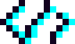
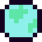
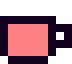
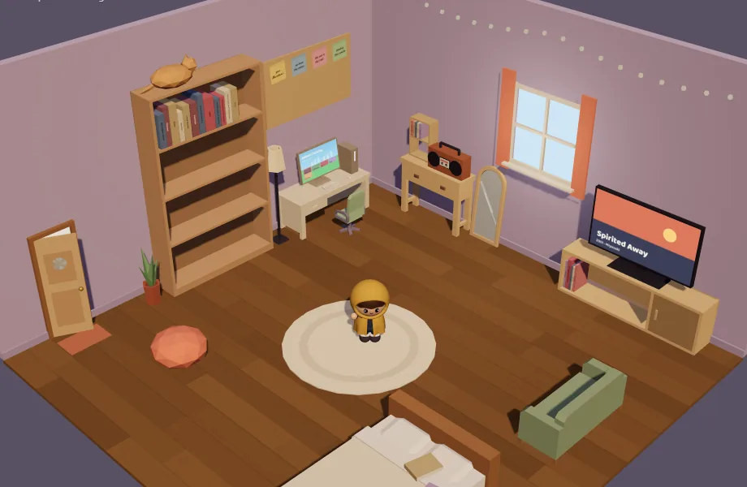
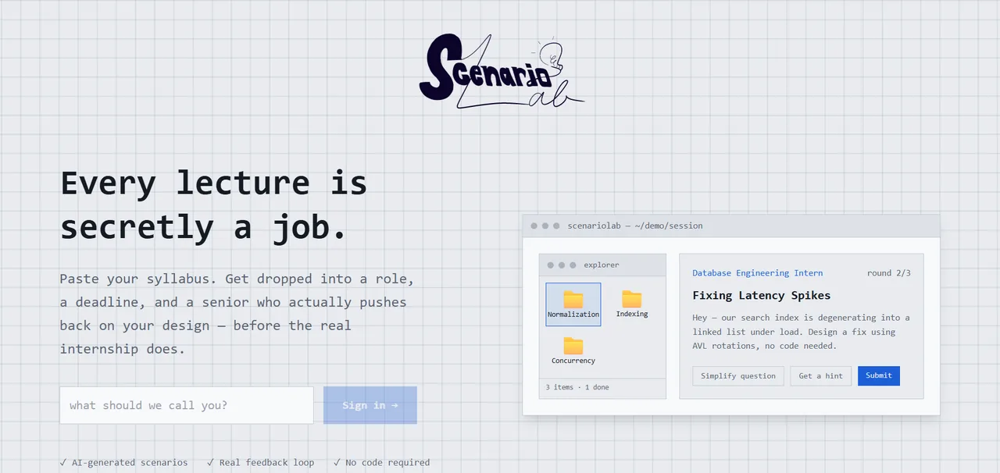
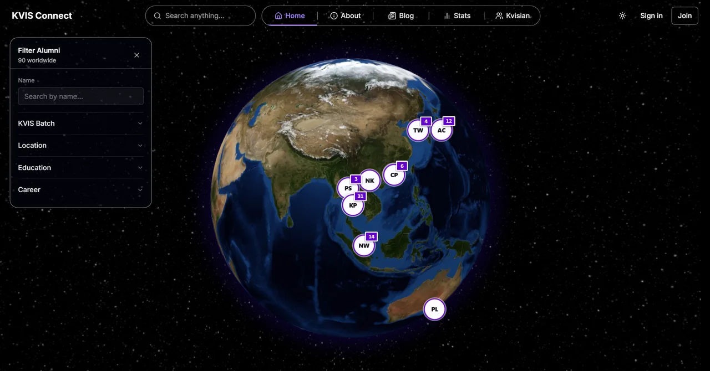

Software development
Building full-stack products that a real community actually uses, from the database up to the last pixel.
Seen in Corner · KVIS-Connect · ScenarioLab
Hi, I'm Chompoo!
Full-stack dev, third-year CS student at PolyU, and part-time game maker, full-time whimsical visionary.
▼ scroll down ▼Hi, I'm Chayada, though most people call me Chompoo! Most of what I do lands somewhere between "full-stack developer" and "person who wants to make a game one day." I've always cared about society and what people actually need, so during my studies I've contributed to projects in healthcare and student communities. In this era of AI beating mathematicians and artists at their own craft, I've come to believe what we need now is human hands and creativity! I want to work with people and keep improving my skills, so I can help bring the fun back to our tech industry, in the most effective way I can <3

Saving the world from AI with our creativity
Powered by books and browser tabs
Building full-stack products that a real community actually uses, from the database up to the last pixel.
Seen in Corner · KVIS-Connect · ScenarioLab
Making playful systems and couch co-op chaos: games friends crowd around one screen to play together.
Seen in Wreckabulary

A cosy low-poly 3D bedroom for everything you read, watch, play and listen to: books on the shelf, films in the TV cabinet, albums as tapes, games on the computer. Friends visit, stick a post-it on your pinboard, and Blend to see how alike you are.

A 2–4 player local-multiplayer party brawler where everything is made of letters: smash furniture into letter tiles, then spell words to summon objects like BLADE, WINGS or BEES. Main designer and core developer for our COMP4122 group project.

An EdTech tool that turns lectures (PDF/PPTX) into workplace scenarios — students design a solution as text or a flowchart, and an AI "senior" grades it against a rubric over 3 revision rounds.

Co-founded and designed a networking platform for Kamnoetvidya Science Academy alumni, students, and staff to connect and share research interests, with an interactive 3D globe mapping alumni worldwide.
Developed a Product Data Management (PDM) database for 7-Eleven Thailand and identified and resolved 100+ UI/UX defects in the PDM application through systematic testing.
Annotated and analyzed AI voice and text responses across Thai-English linguistic contexts to support model evaluation.
Analyzed stick insects' leg movement and neural activity to model how sensory input shapes motor output, and built a CoppeliaSim simulation of stick insect-like locomotion under decentralized adaptive neural control, tuning a Radial Basis Function network to improve training performance.
Solved piecewise linear difference equations to characterize the recursive behavior of system solutions. Presented findings at the Annual Pure and Applied Mathematics (APAM) Conference 2023 and the Kamnoetvidya Invitational Science Fair (KVIS-ISF) 2024.
Engineered a force-sensor electric bed for disabled patients, with Bluetooth-microcontroller safety features and modeled in SolidWorks, plus an EMG muscle-signal framework for wheelchair control. Showcased at national innovation competitions.
Restoring my inner whimsy, one drawing at a time. Tap a piece to see it bigger.
Extra, extra, read all about it! Tap a spine to pull one out.
Looking for full-stack or game dev internship opportunities. If any of this looks interesting, or you just want to talk about books, feminism, and politics, my inbox is open.